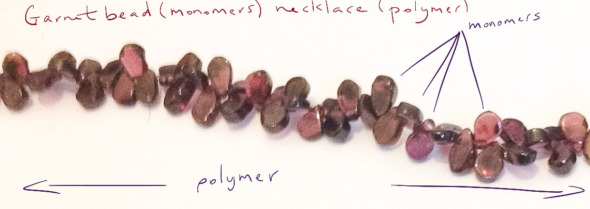
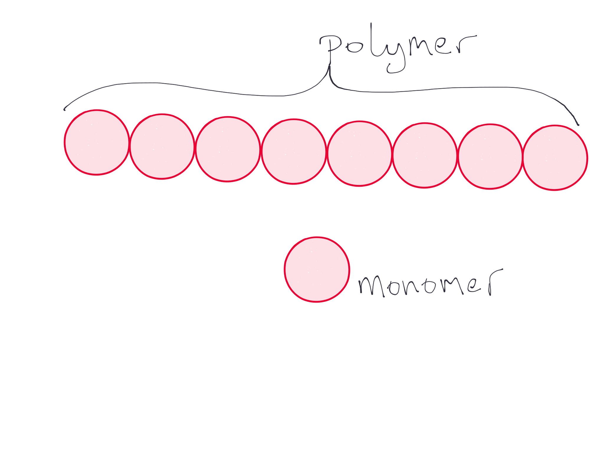

Polymers are molecules made up of repeating units called monomers.
A simple model for a polymer is a link of beads. The necklace(
the polymer) is made up of many beads (the monomers)
On a chemical scale the polymer is a large molecule and is made up of many repeats of small
structures.
 